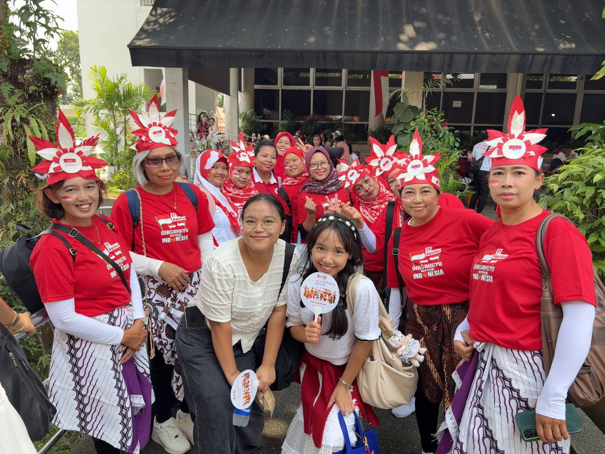

Momen-momen deMuse


Kak Anis & Kak Ajeng

Kak Tarry & Kak Santi

Colors of Our Story🎈🎨
Video
Video tidak bisa diputar dari browser Instagram. Ketuk ··· di pojok kanan atas, lalu pilih Buka di Browser.